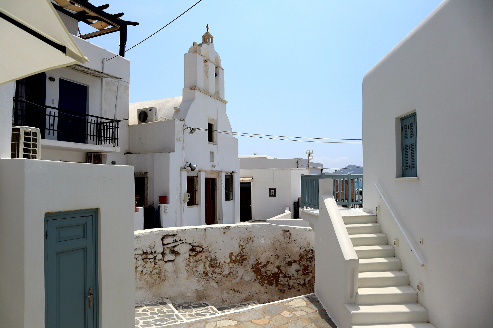
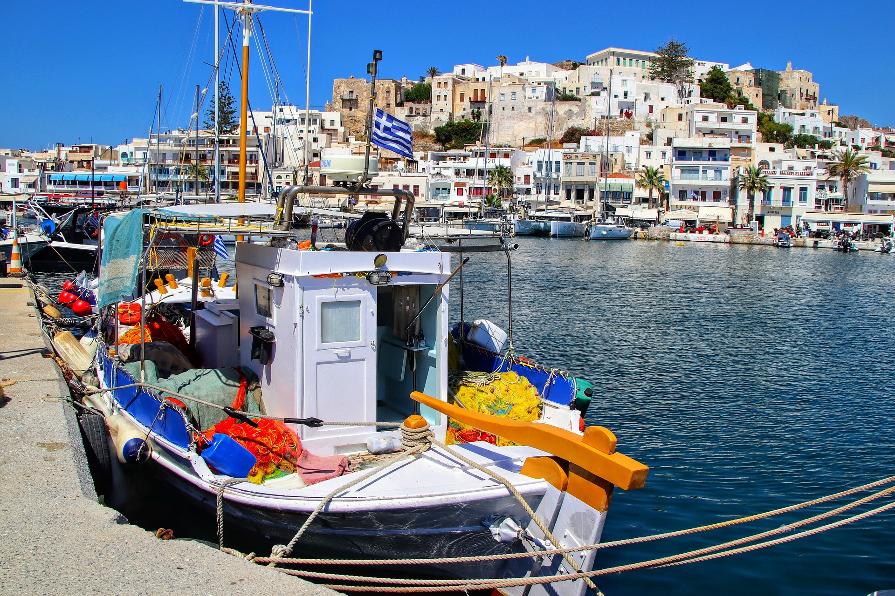

Bienvenue sur notre site dédié à la Grèce, une terre riche en histoire, en culture et en beauté naturelle. Préparez-vous à plonger dans l'héritage fascinant de cette nation méditerranéenne et à découvrir les trésors cachés de ses petites îles.
Que vous soyez passionné d'histoire, de cuisine délicieuse ou simplement en quête de détente au soleil, la Grèce a quelque chose d'exceptionnel à offrir.
Notre première escale vous emmène à travers les pages de l'histoire grecque. Explorez les vestiges de l'Acropole, parcourez les rues sinueuses des villes anciennes, et plongez-vous dans la mythologie grecque qui continue à captiver le monde moderne.
Des images époustouflantes vous accompagneront tout au long de cette aventure.

Naviguez ensuite vers notre page dédiée aux îles grecques, où le bleu azur de la mer Méditerranée rencontre le blanc éclatant des bâtiments traditionnels.
Des destinations incontournables comme Santorin, Mykonos et Rhodes vous attendent avec leurs plages idylliques, leur architecture pittoresque et leur ambiance enchanteresse.

Laissez-vous tenter par la délicieuse cuisine grecque sur notre page dédiée. Des saveurs méditerranéennes, des recettes traditionnelles et des suggestions de restaurants locaux vous invitent à un festin authentique.
Découvrez pourquoi la cuisine grecque est appréciée dans le monde entier.
Que vous soyez un amateur d'aventure, un passionné de culture ou un adepte de la détente, la Grèce a quelque chose pour vous.
Explorez notre page d'activités et de loisirs pour découvrir les possibilités infinies qui vous attendent, des plages ensoleillées aux sentiers de montagne, en passant par les marchés animés et les festivals vibrants.